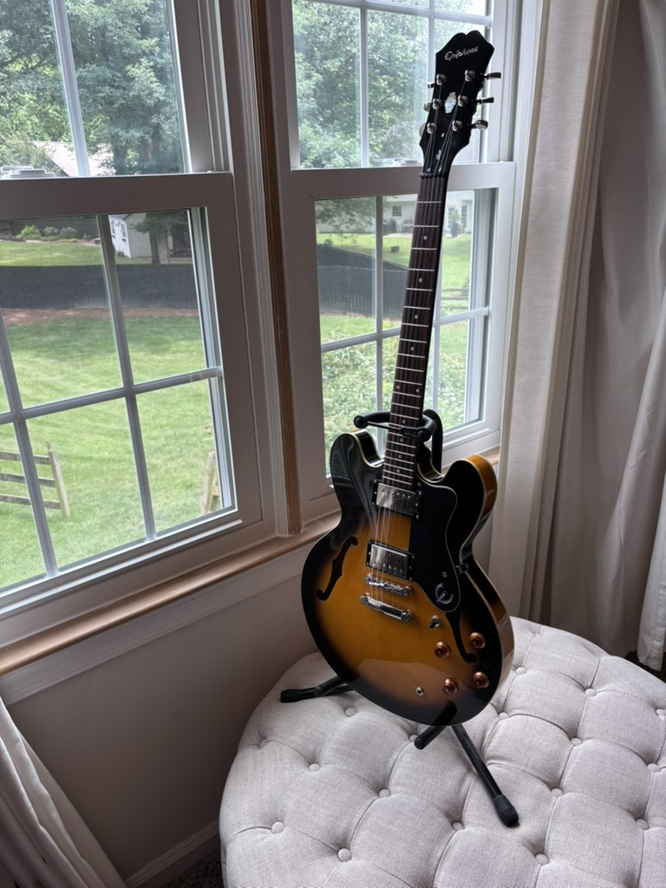

Epiphone Dot VS (Vintage Sunburst)
SOLDFull Step-Up Refinement
God save the Case Queen! I picked this guitar up from a lovely retired woman who purchased it with the intent of learning to play. She only ended up playing it for about 6 hours and you can tell that’s probably true based on 1) the outstanding condition it was in and 2)the extremely high action and neck relief that made it a guitar that was really unpleasant to play. That’s where we come in. This guitar has been fully inspected and “brought up to code.” The neck relief was set to .004 inches. The action is now 3/64ths on the treble side and 4/64ths on the bass side. She’s been given a full naptha wipe down as well and the rosewood fretboard has been conditioned with F1 oil to breathe smoothness and life back into it. This thing plays like a dream with brand new String Joy Soft-Touch 9.5-44 gauge strings. And after some light filing of the nut and some nut a lot oil application, you know it’s going to stay in tune! They literally don’t make them like this any more (the Epiphone Dot line has been replaced by the Inspired by Gibson 335 line). Don’t miss your chance to own this classic beauty. This guitar is in near mint condition but does have a few dings that look like typical wear from a guitar store floor. It comes with a nice arch top hardshell case so you can keep it looking like the day it was sold in the store.
Inquire to Buy